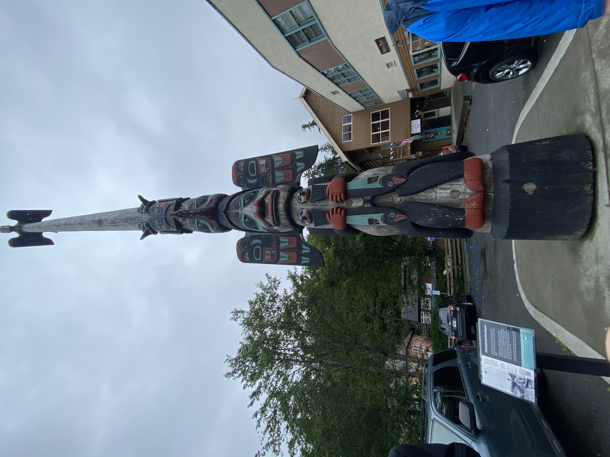

Day 1: Depart from Seattle
We flew into Seattle the night before our cruise departure. We were on the Carnival Luminosa for 7 days. We spent the first day exploring the ship.
Day 2: Fun Day at SeaWe enjoyed the activites on the ship, like trivia and the arcade. I also found a cruise duck. I won my team medals by winning the tie breaker for the Wheely Big Trivia Game. We also really enjoyed the food, my favorite was the creme brulee.
 Day 3: Juneau, AK
Day 3: Juneau, AK
We arrived in Juneau, and had to take water taxis into port. We also did a self guided Jeep tour for our excursion. We got to see a glacier and also did some panning for Gold. This was our favorite port.
Day 4: Skagway, AKThis day we were in Skagway. It was one of our least favorites, but we still had fun. We took a train ride up the White Pass Summit, and I got some really cool pictures. However, I also lost my sunglasses. Later that day, while on ship, we got to see a whale right outside the window.
 Day 5: Tracy Arm Fjord/ Endicott Arm
Day 5: Tracy Arm Fjord/ Endicott Arm
This cruise day we were supposed to sail through the Tracy Arm Fjord, but the conditions were not suitable so we ended up sailing through the Endicott Arm. It was beautiful! We enjoyed sitting on the upper deck and watching the views of the glacier and mountains. The cruise staff also surprised us, with a display of towel animals.
 Day 6: Ketchikan, AK
Day 6: Ketchikan, AK
The port for Day 6 was Ketchikan, AK. We didn't plan any shore excursions, but we still enjoyed our time. We did a lot of walking. I had almost 20,000 steps that day. We stopped for sustenance at a crepe restaurant, our nutella crepe with strawberries was AMAZING!
 Day 7: Victoria, B.C.Day 7 we stopped in Canada. This was my first time ever being there, and it did not disappoint. It was so beautiful. The only downside was we didn't get there until 8 pm, and I wish we could have had the whole day! I did a lot of walking that day also.
 Debarking from the Cruise
Debarking from the Cruise
This was the saddest day of our cruise, the day it ended. We had to get up early and be off the cruise by 8:30. We got breakfast with our family and then headed to our meetup point. The rest of this day was spent ubering and sitting in the airport until 5:30 pm. We didn't make it back to our house until 2:30 am.